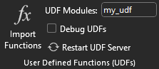
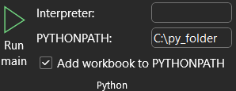
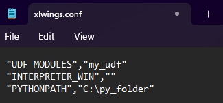
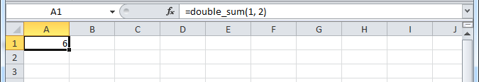
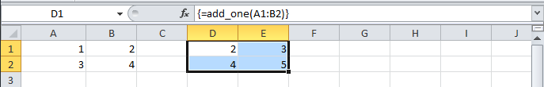
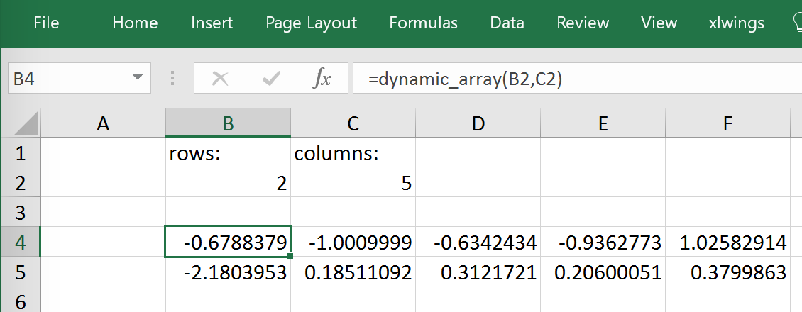

User Defined Functions (UDFs)¶
This tutorial gets you quickly started on how to write User Defined Functions.
备注
UDFs are currently only available on Windows.
For details of how to control the behaviour of the arguments and return values, have a look at Converters and Options.
For a comprehensive overview of the available decorators and their options, check out the corresponding API docs: UDF decorators.
One-time Excel preparations¶
Enable
Trust access to the VBA project object modelunderFile > Options > Trust Center > Trust Center Settings > Macro Settings. You only need to do this once. Also, this is only required for importing the functions, i.e. end users won't need to bother about this.Install the add-in via command prompt:
xlwings addin install(see Add-in & Settings).
Workbook preparation¶
The easiest way to start a new project is to run xlwings quickstart myproject on a command prompt (see Command Line Client (CLI)).
This automatically adds the xlwings reference to the generated workbook.
A simple UDF¶
The default add-in settings expect a Python source file in the way it is created by quickstart:
in the same directory as the Excel file
with the same name as the Excel file, but with a
.pyending instead of.xlsm.
Alternatively, you can point to a specific module via UDF Modules in the xlwings ribbon.
The Image below shows the correct input for the "UDF Modules" field in the xlwings ribbon with a module called "my_udf.py":

If the module is not within the same directory as the Excel file, you point to it via the "PYTHONPATH" field. The image below shows the configuration if the module was in the folder "C:\py_folder" (just an example so it fits in the field window):

For reference, this is how your xlwings.conf file would look like with these settings:

Let's assume you have a Workbook myproject.xlsm, then you would write the following code in myproject.py:
import xlwings as xw
@xw.func
def double_sum(x, y):
"""Returns twice the sum of the two arguments"""
return 2 * (x + y)
Now click on
Import Python UDFsin the xlwings tab to pick up the changes made tomyproject.py.Enter the formula
=double_sum(1, 2)into a cell and you will see the correct result:
The docstring (in triple-quotes) will be shown as function description in Excel.
备注
You only need to re-import your functions if you change the function arguments or the function name.
Code changes in the actual functions are picked up automatically (i.e. at the next calculation of the formula, e.g. triggered by
Ctrl-Alt-F9), but changes in imported modules are not. This is the very behaviour of how Python imports work. If you want to make sure everything is in a fresh state, clickRestart UDF Server.The
@xw.funcdecorator is only used by xlwings when the function is being imported into Excel. It tells xlwings for which functions it should create a VBA wrapper function, otherwise it has no effect on how the functions behave in Python.
Array formulas: Get efficient¶
Calling one big array formula in Excel is much more efficient than calling many single-cell formulas, so it's generally a good idea to use them, especially if you hit performance problems.
You can pass an Excel Range as a function argument, as opposed to a single cell and it will show up in Python as list of lists.
For example, you can write the following function to add 1 to every cell in a Range:
@xw.func
def add_one(data):
return [[cell + 1 for cell in row] for row in data]
To use this formula in Excel,
Click on
Import Python UDFsagainFill in the values in the range
A1:B2Select the range
D1:E2Type in the formula
=add_one(A1:B2)Press
Ctrl+Shift+Enterto create an array formula. If you did everything correctly, you'll see the formula surrounded by curly braces as in this screenshot:
Number of array dimensions: ndim¶
The above formula has the issue that it expects a "two dimensional" input, e.g. a nested list of the form
[[1, 2], [3, 4]].
Therefore, if you would apply the formula to a single cell, you would get the following error:
TypeError: 'float' object is not iterable.
To force Excel to always give you a two-dimensional array, no matter whether the argument is a single cell, a column/row or a two-dimensional Range, you can extend the above formula like this:
@xw.func
@xw.arg('data', ndim=2)
def add_one(data):
return [[cell + 1 for cell in row] for row in data]
Using type hints, the same can be written like this:
from typing import Annotated
@xw.func
def add_one(data: Annotated[list[list[float], {"ndim": 2}]]):
return [[cell + 1 for cell in row] for row in data]
If you want to reuse that type hint for other functions, you can simplify things like this:
from typing import Annotated
List2d = Annotated[list[list[float], {"ndim": 2}]]
@xw.func
def add_one(data: List2d):
return [[cell + 1 for cell in row] for row in data]
Array formulas with NumPy and Pandas¶
Often, you'll want to use NumPy arrays or Pandas DataFrames in your UDF, as this unlocks the full power of Python's ecosystem for scientific computing.
To define a formula for matrix multiplication using numpy arrays, you would define the following function:
import xlwings as xw
import numpy as np
@xw.func
@xw.arg('x', np.array, ndim=2)
@xw.arg('y', np.array, ndim=2)
def matrix_mult(x, y):
return x @ y
and again the same with type hints:
from typing import Annotated
import xlwings as xw
import numpy as np
Array2d = Annotated[np.ndarray, {"ndim": 2}]
@xw.func
def matrix_mult(x: Array2d, y: Array2d):
return x @ y
备注
If you are not on Python >= 3.5 with NumPy >= 1.10, use x.dot(y) instead of x @ y.
A great example of how you can put Pandas at work is the creation of an array-based CORREL formula. Excel's
version of CORREL only works on 2 datasets and is cumbersome to use if you want to quickly get the correlation
matrix of a few time-series, for example. Pandas makes the creation of an array-based CORREL2 formula basically
a one-liner:
import xlwings as xw
import pandas as pd
@xw.func
@xw.arg('df', pd.DataFrame, index=False, header=False)
@xw.ret(index=False, header=False)
def CORREL2(df):
"""Like CORREL, but as array formula for more than 2 data sets"""
return df.corr()
and the same again with type hints:
from typing import Annotated
import xlwings as xw
import pandas as pd
@xw.func
def CORREL2(df: Annotated[pd.DataFrame, {"index": False, "header": False}]):
"""Like CORREL, but as array formula for more than 2 data sets"""
return df.corr()
@xw.arg and @xw.ret decorators¶
These decorators are to UDFs what the options method is to Range objects: they allow you to apply converters and their
options to function arguments (@xw.arg) and to the return value (@xw.ret). For example, to convert the argument x into
a pandas DataFrame and suppress the index when returning it, you would do the following:
@xw.func
@xw.arg("df", pd.DataFrame)
@xw.ret(index=False)
def myfunction(df):
# df is a DataFrame, do something with it
return df
For further details see the Converters and Options documentation.
Using type hints instead of decorators¶
在 0.32.0 版本加入.
Since v0.32.0, xlwings has supported type hints that you can use instead of or in combination with decorators:
import xlwings as xw
import pandas as pd
@xw.func
def myfunction(df: pd.DataFrame) -> pd.DataFrame:
# df is a DataFrame, do something with it
return df
In this example, the return type (-> pd.DataFrame) is optional, as xlwings automatically checks the type of the returned object.
If you need to provide additional conversion arguments, you can either provide them via an annotated type hint or via a decorator. Note that when you use type hints and decorators together, decorators override type hints for conversion.
To set index=False for both the argument and the return value, you can annotate the type hint like this:
from typing import Annotated
import xlwings as xw
import pandas as pd
@xw.func
def myfunction(
df: Annotated[pd.DataFrame, {"index": False}]
) -> Annotated[pd.DataFrame, {"index": False}]:
# df is a DataFrame, do something with it
return df
As this might be a little harder to read, you can extract the type definition, which also allows you to reuse it like so:
from typing import Annotated
import xlwings as xw
import pandas as pd
Df = Annotated[pd.DataFrame, {"index": False}]
@xw.func
def myfunction(df: Df) -> Df:
# df is a DataFrame, do something with it
return df
Alternatively, you could also combine type hints with decorators:
from typing import Annotated
import xlwings as xw
import pandas as pd
@xw.func
@xw.arg("df", index=False)
@xw.ret(index=False)
def myfunction(df: pd.DataFrame) -> pd.DataFrame:
# df is a DataFrame, do something with it
return df
Legacy Dynamic Arrays¶
备注
If your version of Excel supports the new native dynamic arrays, then you don't have to do anything special,
and you shouldn't use the expand decorator! To check if your version of Excel supports it, see if you
have the =UNIQUE() formula available. Native dynamic arrays were first introduced at the end of 2018.
As seen above, to use Excel's array formulas, you need to specify their dimensions up front by selecting the
result array first, then entering the formula and finally hitting Ctrl-Shift-Enter. In practice, it often turns
out to be a cumbersome process, especially when working with dynamic arrays such as time series data.
Since v0.10, xlwings offers dynamic UDF expansion:
This is a simple example that demonstrates the syntax and effect of UDF expansion:
import numpy as np
@xw.func
@xw.ret(expand='table')
def dynamic_array(r, c):
return np.random.randn(int(r), int(c))
and the same with type hints:
from typing import Annotated
import numpy as np
@xw.func
def dynamic_array(r: int, c: int) -> Annotated[np.ndarray, {"expand": "table"}]:
return np.random.randn(int(r), int(c))


备注
Expanding array formulas will overwrite cells without prompting
Pre v0.15.0 doesn't allow to have volatile functions as arguments, e.g. you cannot use functions like
=TODAY()as arguments. Starting with v0.15.0, you can use volatile functions as input, but the UDF will be called more than 1x.Dynamic Arrays have been refactored with v0.15.0 to be proper legacy arrays: To edit a dynamic array with xlwings >= v0.15.0, you need to hit
Ctrl-Shift-Enterwhile in the top left cell. Note that you don't have to do that when you enter the formula for the first time.
Docstrings¶
The following sample shows how to include docstrings both for the function and for the arguments x and y that then show up in the function wizard in Excel:
import xlwings as xw
@xw.func
@xw.arg('x', doc='This is x.')
@xw.arg('y', doc='This is y.')
def double_sum(x, y):
"""Returns twice the sum of the two arguments"""
return 2 * (x + y)
And the same with type hints:
from typing import Annotated
import xlwings as xw
@xw.func
def double_sum(
x: Annotated[float, {"doc": "This is x."}],
y: Annotated[float, {"doc": "This is y."}],
):
"""Returns twice the sum of the two arguments"""
return 2 * (x + y)
The "caller" argument¶
You often need to know which cell called the UDF. For this, xlwings offers the reserved argument caller which returns the calling cell as xlwings range object:
@xw.func
def get_caller_address(caller):
# caller will not be exposed in Excel, so use it like so:
# =get_caller_address()
return caller.address
Note that caller will not be exposed in Excel but will be provided by xlwings behind the scenes.
The "vba" keyword¶
By using the vba keyword, you can get access to any Excel VBA object in the form of a pywin32 object. For example, if you wanted to pass the sheet object in the form of its CodeName, you can do it as follows:
@xw.func
@xw.arg('sheet1', vba='Sheet1')
def get_name(sheet1):
# call this function in Excel with:
# =get_name()
return sheet1.Name
Note that vba arguments are not exposed in the UDF but automatically provided by xlwings.
Macros¶
On Windows, as an alternative to calling macros via RunPython, you can also use the @xw.script
decorator:
import xlwings as xw
@xw.script
def my_macro():
"""Writes the name of the Workbook into Range("A1") of Sheet 1"""
wb = xw.Book.caller()
wb.sheets[0].range('A1').value = wb.name
After clicking on Import Python UDFs, you can then use this macro by executing it via Alt + F8 or by
binding it e.g. to a button. To do the latter, make sure you have the Developer tab selected under File > Options > Customize Ribbon. Then, under the Developer tab, you can insert a button via Insert > Form Controls.
After drawing the button, you will be prompted to assign a macro to it and you can select my_macro.
Note: previously, xw.script was called xw.sub, which is now deprecated.
Call UDFs from VBA¶
Imported functions can also be used from VBA. For example, for a function returning a 2d array:
Sub MySub()
Dim arr() As Variant
Dim i As Long, j As Long
arr = my_imported_function(...)
For j = LBound(arr, 2) To UBound(arr, 2)
For i = LBound(arr, 1) To UBound(arr, 1)
Debug.Print "(" & i & "," & j & ")", arr(i, j)
Next i
Next j
End Sub
Asynchronous UDFs¶
备注
This is an experimental feature
在 v0.14.0 版本加入.
xlwings offers an easy way to write asynchronous functions in Excel. Asynchronous functions return immediately with
#N/A waiting.... While the function is waiting for its return value, you can use Excel to do other stuff and whenever
the return value is available, the cell value will be updated.
The only available mode is currently async_mode='threading', meaning that it's useful for I/O-bound tasks, for example when
you fetch data from an API over the web.
You make a function asynchronous simply by giving it the respective argument in the function decorator. In this example,
the time consuming I/O-bound task is simulated by using time.sleep:
import xlwings as xw
import time
@xw.func(async_mode='threading')
def myfunction(a):
time.sleep(5) # long running tasks
return a
You can use this function like any other xlwings function, simply by putting =myfunction("abcd") into a cell
(after you have imported the function, of course).
Note that xlwings doesn't use the native asynchronous functions that were introduced with Excel 2010, so xlwings asynchronous functions are supported with any version of Excel.